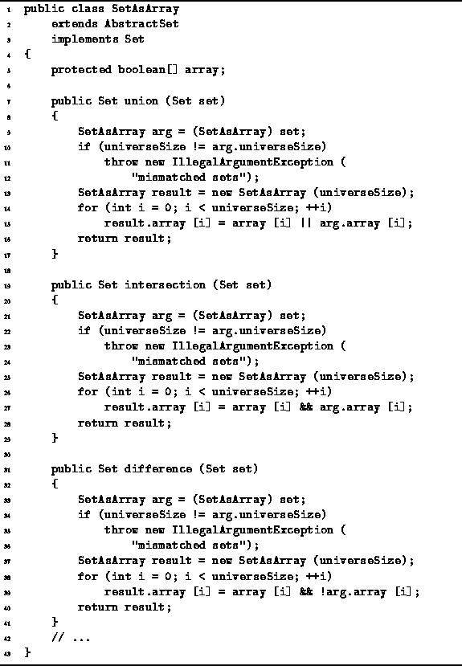

Data Structures and Algorithms
with Object-Oriented Design Patterns in Java
Data Structures and Algorithms
with Object-Oriented Design Patterns in Java
Program  defines the three methods,
union, intersection, and difference.
These methods correspond to , , and -, respectively.
defines the three methods,
union, intersection, and difference.
These methods correspond to , , and -, respectively.

Program: SetAsArray class union, intersection and difference methods.
The set union operator takes one argument
which is assumed to be a SetAsArray instance.
It computes the SetAsArray obtained
from the union of this and set.
The implementation given requires that the sets be compatible.
Two sets are deemed to be compatible if they have the same universe.
The result also has the same universe.
Consequently, the boolean array in all three sets
has the same length, N.
The set union method creates a result array of the required size
and then computes the elements of the array as required.
The  element of the result is true
if either the
element of the result is true
if either the  element of s
or the
element of s
or the  element of t is true.
Thus, set union is implemented using
the boolean or operator,
||.
element of t is true.
Thus, set union is implemented using
the boolean or operator,
||.
The set intersection method is almost identical to set union, except that the elements of the result are computed using the boolean and operator. The set difference method is also very similar. In this case, an item is an element of the result only if it is a member of s and not a member of t.
Because all three methods are almost identical,
their running times are essentially the same.
That is, the running time of
the set union, intersection, and difference operations is O(N),
where  .
.
 Copyright © 1998 by Bruno R. Preiss, P.Eng. All rights reserved.
Copyright © 1998 by Bruno R. Preiss, P.Eng. All rights reserved.